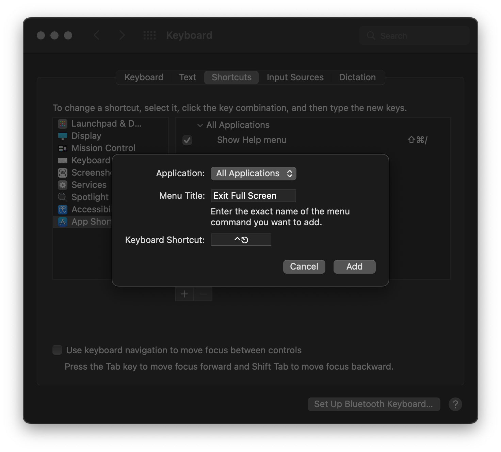

tildon't escape full screen
I prefer small laptops and tidy screens, so keep most of my apps in full screen mode on my Mac. Lots of these apps, especially browsers, may have modals, forms, or other elements I need my Esc key to control. If I overzealously hit Esc one times too many, my window leaves full screen.
Ugh.
A quick solution is to open the Keyboard Preferences, in the Shortcuts tab add a new App Shortcut for “Exit Full Screen” for all applications, and choose something a little more intentional. In my case, I use Control-Escape1.

-
Especially helpful as I have remapped Caps Lock to be Control.
↩